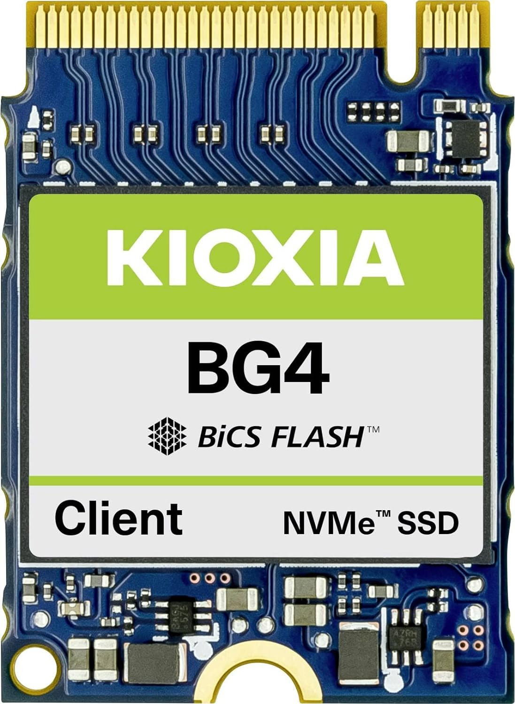

| PROCESADOR:
| |
AMD Ryzen™ 3 5305G
| Series Ryzen 5000 Series
Forma Factor Escritorios
# de núcleos de CPU 4
# de hilos 8
Máx. Reloj de impulso Up to 4.2 GHz
Reloj base 4 GHz
L2 Cache 2 MB
L3 Cache 8 MB
TDP predeterminado 65 W
Tecnología de procesador
para núcleos de CPU TSMC 7nm FinFET
Desbloqueado para
Overclocking Si
Zócalo de CPU AM4
Temperatura máx. de
funcionamiento (Tjmax) 95°C
Tipo de memoria del
sistema DDR4
Canales de memoria 2
| $80 USD $1,543.10 MXN |
INFO |
| Tarjeta Madre: |
|
MSI B550-A PRO ProSeries ATX: . |
Factor de forma: ATX (30.5 cm x 24.4 cm)
Socket: AM4 (compatible con procesadores AMD Ryzen™ de 3ª, 4ª y 5ª generación)
Chipset: AMD B550
Memoria RAM:
4 slots DDR4 (hasta 128 GB máximo)
Velocidades soportadas: 2133 MHz a 5100+ MHz (OC) con perfil XMP/A-XMP
Modo dual channel
|
$199.00 USD $3,838.47 MXN |
INFO |
| RAM: |
|
Samsung M378A1G44AB0-CWE 2x8GB . |
Capacidad: 8GB por módulo (kit de 2x8GB = 16GB en dual-channel)
Tipo de Memoria: DDR4 SDRAM
Formato: DIMM 288-pin (para placas base de escritorio)
Rendimiento y Frecuencias
Velocidad Base: 3200 MHz (PC4-25600)
Latencia (CL): CL22 (Timings típicos: 22-22-22-52)
Voltaje: 1.2V (estándar JEDEC DDR4)
Ancho de Banda: 25.6 GB/s (por módulo, en teoría)
|
$33.95 USD $654.85 MXN |
INFO |
| Memoria: |
 |
KIOXIA 512GB. |
Capacidad: 512GB
Tipo de SSD: Unidad de Estado Sólido (SSD) 3D NAND
Factor de Forma: M.2 2280 o 2.5" SATA (dependiendo del modelo)
Rendimiento (Varía según modelo PCIe NVMe o SATA)
Si es PCIe NVMe (Ej: KIOXIA Exceria Plus):
Interfaz: PCIe Gen3 x4 (NVMe 1.3/1.4)
Velocidades:
Lectura secuencial: Hasta 3,500 MB/s
Escritura secuencial: Hasta 2,900 MB/s
|
$49.99 USD $964.25 MXN |
INFO |
| PSU |
|
100n10400l1 - Evga 400w PSU |
Dispositivos compatibles:
• Computadora personal (PC)
Tipo de conector utilizado en el cable:
• ATX
• Floppy (unidad de disquete)
• PCI Express
Potencia de salida:
• 400 vatios (W)
Factor de forma:
• ATX12V (estándar para fuentes de PC)
Vatiaje (potencia total):
• 400 vatios
Método de refrigeración:
• Aire (ventilador)
Diseño de la fuente de alimentación:
• No modular (cables fijos, no desmontables)
Tipo de conector para bus del sistema:
• 6+2 pines (usado para tarjetas gráficas PCIe)
Cantidad de conectores:
• 15
Número de ventiladores:
• 1
Voltaje de entrada máximo:
• 100 voltios (V) de corriente alterna (CA)
Voltaje de entrada mínimo:
• 100 voltios (V) de corriente alterna (CA)
|
$46.22 USD $891.53 MXN |
INFO |
|
|
Uso:
Trabajo Basico, navegación web, |
Precio Total:
: 7,892.2 MXN 409.16 USD |
|